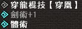

Typically Skills are activated by simply amassing enough points on armour pieces and decorations for them to trigger, the default limit for activated skills is 10, at G Rank this can be increased to either 11 or 12 depending on the types of armour you are utilising.
All Skills have an invisible priority value associated which dictates if they are activated or not, you can check what skills a set will actually have in the MHSX2G Set Generator or by referencing this pastebin.
Priority is important late game as it is very easy to activate unwanted skills, this is especially true of sets making use of Focus (Quick Charge) as it has the lowest priority of all skills and literally anything else will push it downwards.
As with the latest mainline titles Frontier has a number of skills that are combinations of one or more other skills.
If you have one or more of the skills a combination skill grants this will be displayed as gray in your Guild Card. This means the skill is disabled but is still taking up one of your 10-12 armour slots.
It's important to avoid having skills that are taking up slots but not activated when at G Rank, it's typical to have 11-12 skills active as standard at this point and one being wasted is a very bad thing.
| Example Hybrid Skills | |
| Sword God+2 劍神+2 | Contains: Sharpness+1, Fencing+2, Razor Sharp+2 |
| Gentle Shot+3 穏射+3 | Contains: Load Up, Recoil Reduction+3 |
| Blazing Majesty+2 紅焰的威光+2 | Contains: Adrenaline+2, Red Soul, Bombardier, Fire Res+30, Artillery God, Summer Person, Terrain Damage Decreased (Large), Fire Attack Up (Large), Flame Sword+3 and Bomb Sword+3 |
There are some cases where skills will be displayed as grey in town but will still be active on quests, this is due to having the actual skill and having it boosted while also having it in a hybrid skill. For example if you have Sword God+1 and Fencing+1 at the same time Fencing+1 would shown as disabled while in town, in quest however Fencing would be upgraded to+2 due to the Muscle Boost effect and as such it is still an active skill. Muscle Boost is detailed below.
Exotic, Tower and Burst or Origin Skills are not currently displayed on the Guild Card!
They are still however always active and will cause their skills to be greyed out on the skill list! They are visible from Z1 onwards in a new section in hunter status!
Exotic Armour Pieces are unique in that they always activate a certain skill while any number of pieces are equipped. For example, equipping a Zinogre Helmet will always grant you Thunder Attack Up Large, this ignores all other factors such as Skill Limits and any other piece such as the Waist or having all 5 pieces would still grant this skill.
Burst and Origin Weapons both have fixed skills associated with them that work mechanically the same as the above, these are fixed versions of skills that will be replaced by higher versions and do not get buffed by having extra skill points. For example a weapon that grants Issen+2 simply outright gives the skill rather than counting as 20 points, this means you will still need to have 30 points total on your skills to activate Issen+3 while using one of these weapons. You cannot simply add 10 points.
Tower Weapons can have Decorations inserted into them that outright add Armour Skills that work identically to those on Burst or Origin weapons. The main difference is simply that you get to choose what skills to slot into the Tower weapon rather than it being defined by the base weapon used. Despite decorations being used, these skills still do not add points and are instead fixed. This means that even if you slotted in Good Luck you would still need 20 points in fate to trigger Great Luck.
There are two ways to get skills outside of equipment, these are Skill Fruits and Guild Cooking.
Skill Fruits are a premium item that activates a skill upon being consumed, this lasts for the entire duration of that quest and expires after you either complete the quest or fail it. Retiring returns the item as with all others. Fruits are available by spending Lottery G Coins at the Pink Shop NPC at a rate of 30 fruit to 3 coins. These fruits can also be given out with events or other purchases but generally are not worth going out of your way to get unless you are a speedrun oriented player at a completely maxed out endgame level looking to still improve your times.
Guild Cooking is available to guilds after they reach a certain level, this allows you to utilise a number of ingredients in a cooking minigame in order to create food that grant whatever skill was cooked for on all quests taken within their duration. Easy to acquire recipes include Wide-Area+3, Adrenaline+2, Goddess' Embrace and more.
More details on cooking can be found in the English Guild and Guild Hall section.
Gou armour pieces and their upgrades cause a Boost or Muscle effect. This 'boosts' a skill by one level, so for example if you had Evasion+1 and were under the 'Boost' effect you would functionally have Evasion+2, saving 10 points in the skill.
If you have the correct armour type equipped, skills will have a light blue arrow next to their names in your guild card, this indicates that the skill will go up a level while in a quest and while satisfying the conditions of the armour, the skill name itself will become blue if the skill is actively being boosted.
Martial Arts and Fencing being boosted. Fencing was greyed due to another skill providing +1 but becomes active in quest as +2 overwrites it.
The conditions to enable the 'Muscle' buff are simply Health and Stamina amounts that vary depending on the type of armour you have equipped, this is detailed in the section below.
| Armour Type | Boost Requirements | Additional Effects |
| (HR100) EN: Gou Armour JP: 剛種防具 | Also requires 26+ Stamina 1 Piece: 100% Health 2 Pieces: 90% Health 3 Pieces: 83% Health 4 Pieces: 76% Health 5 Pieces: 70% Health | No additional effects |
| (SR1) EN: Heavenly Storm Armour JP: 天嵐防具 | 1 Piece: 100% Health 2 Pieces: 90% Health 3 Pieces: 83% Health 4 Pieces: 76% Health 5 Pieces: 70% Health | Per Piece Equipped: Attack+15, Attribute+2%, HC Rarity Requirement-1 Blademaster weapons with 2+ pieces: While on Gou or Supremacy Rank quests the sharpness of Heavenly Storm Weapons and their higher upgrades goes up by one colour level (Green sharpness becomes Blue, etc.) Ranged Weapons with 2+ pieces: While on Gou or Supremacy Rank quests the Critical Range Multipliers of Heavenly Storm Weapons and their higher upgrades are increased by +0.3x. Bows with 2+ pieces: While on Gou or Supremacy quests Heavenly Storm bows and their higher upgrades have +0.1x multiplier on Power Coatings. |
| (SR300) EN: Supremacy Species Armour JP: 覇種防具 | 1 Piece: 67% Health 2 Pieces: 34% Health 3 Pieces: 1% Health 4 Pieces: Always Boosted 5 Pieces: Always Boosted | Per Piece Equipped: Attack+15, Attribute+2%, HC Rarity Requirement-1 Blademaster weapons with 2+ pieces: While on Gou, Supremacy or G Rank quests the sharpness of Heavenly Storm Weapons and their higher upgrades goes up by one colour level (Green sharpness becomes Blue, etc.) Ranged Weapons 2+ pieces: While on Gou, Supremacy or G Rank quests the Critical Range Multipliers of Heavenly Storm Weapons and their higher upgrades are increased by +0.3x. Bows with 2+ pieces: While on Gou, Supremacy or G Rank quests Heavenly Storm bows and their higher upgrades have +0.1x multiplier on Power Coatings. |
| (G Rank) EN: G Supremacy Species Armour JP: G覇種防具 | 1 Piece: 67% Health 2 Pieces: 34% Health 3 Pieces: 1% Health 4 Pieces: Always Boosted 5 Pieces: Always Boosted | Per Piece Equipped: Attack+15, Attribute+2%, HC Rarity Requirement-1 Blademaster weapons with 2+ pieces: While on Gou, Supremacy or G Rank quests the sharpness of Heavenly Storm Weapons and their higher upgrades goes up by one colour level (Green sharpness becomes Blue, etc.) Ranged Weapons 2+ pieces: While on Gou, Supremacy or G Rank quests the Critical Range Multipliers of Heavenly Storm Weapons and their higher upgrades are increased by +0.3x. Bows with 2+ pieces: While on Gou, Supremacy or G Rank quests Heavenly Storm bows and their higher upgrades have +0.1x multiplier on Power Coatings. |
| (G Rank) EN: Burst Species Armour JP: 烈種防具 | 1 Piece+: Always Boosted | Per Piece Equipped: Attack+15, Attribute+2%, HC Rarity Requirement-1 Blademaster weapons with 2+ pieces: While on Gou, Supremacy or G Rank quests the sharpness of Heavenly Storm Weapons and their higher upgrades goes up by one colour level (Green sharpness becomes Blue, etc.) Ranged Weapons 2+ pieces: While on Gou, Supremacy or G Rank quests the Critical Range Multipliers of Heavenly Storm Weapons and their higher upgrades are increased by +0.3x. Bows with 2+ pieces: While on Gou, Supremacy or G Rank quests Heavenly Storm bows and their higher upgrades have +0.1x multiplier on Power Coatings. |
| (G Rank) EN: Origin Species Armour (G Rank) JP: 始種防具 | 1 Piece+: Always Boosted | Per Piece Equipped: Attack+20, Attribute+3%, HC Rarity Requirement-1 Blademaster weapons with 1 piece: While on Gou, Supremacy or G Rank quests the sharpness of Heavenly Storm Weapons and their higher upgrades goes up by one colour level (Green sharpness becomes Blue, etc.) Ranged Weapons 1 piece: While on Gou, Supremacy or G Rank quests the Critical Range Multipliers of Heavenly Storm Weapons and their higher upgrades are increased by +0.3x (with all G Rank and Gou Weapon types.) Bows with 1 piece: While on Gou, Supremacy or G Rank quests Heavenly Storm bows and their higher upgrades have +0.1x multiplier on Power Coatings (any G Rank weapon type). |